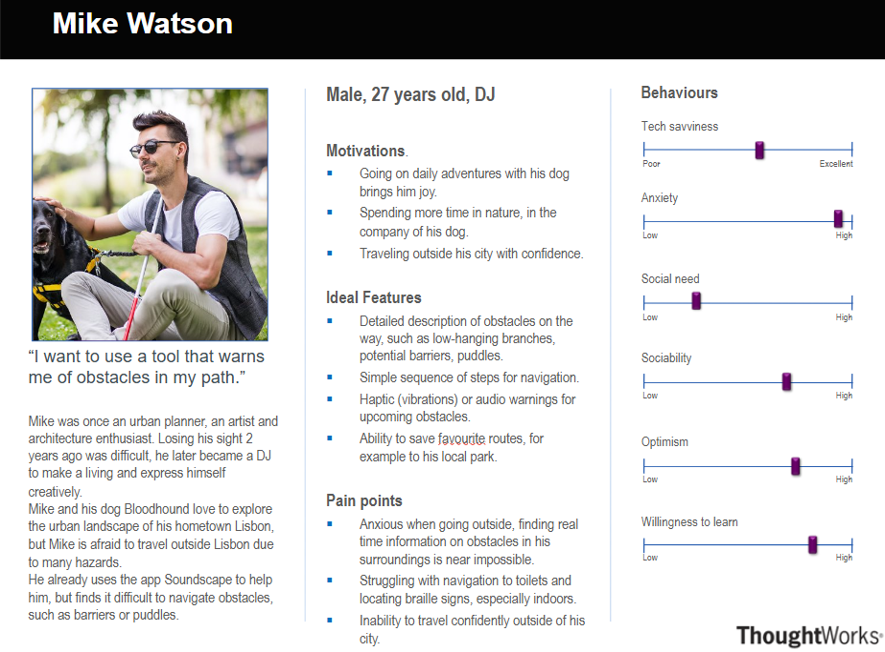
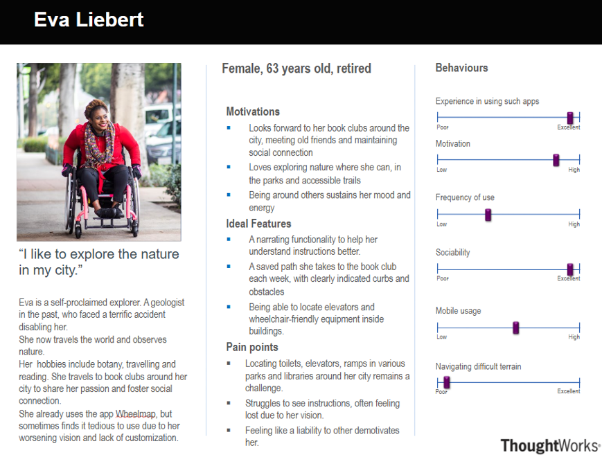

Requirements
Related Project Review
Go into the brief history of this project the background.
Japan walk guide
Japan Walk Guide is designed to assist individuals ,specifically for those who have mobility issues and provides these users with navigation assistance. Using real-time data it provides a variety of accessibility features such as color coded icons, user submitted photos to verify accessibility and cross platform accessibility. The user input and authentication system allow for newer updates from users, and fosters a community of users that contribute There is also voice assisted navigation for visually impaired users or those who are navigating hands free. Different languages, color schemes and controls for the app are simple ways to increase the accessibility of the app, making big differences for some users. This app demonstrates the importance of designing with the user in mind, catering to diverse needs. Additionally, they have offline functionality, with the option to download data. This solves the challenge of bad connection and is especially relevant in underground tube areas with no connection. It is also very fast to open and launch, using a web application and QR codes around the city to launch the app. .

What we can learn:
- Empower Accessibility: Empower those with accessibility issues, the ability to move swiftly and confidently around dense cities.
- Community Platform: Provide a platform for users to share their experiences and knowledge of the city.
- Inclusive Widget: A reliable and inclusive widget developers can use in their websites.
Wheelmap
Wheelmap.org allows users to search and view the accessibility status of public places (e.g., restaurants, shops, and public buildings) using a color-coded system (green = fully accessible, yellow = partially accessible, red = not accessible). The data is crowd sourced, similar to Japan walk guide.This is a good way to allow for scalability which wheelmap.org has done as it provides information for nearly all countries. The interface is also very simple , and it openly shares its data and an ability to search and filter for objects on the map. This is closer to what our widget will function as, although the website doesn't have many accessibility features, which introduces a problem with many of these navigation applications, there needs to be more accessible technology e.g hand free speech recognition, to navigate the UI.
Main features include:
- Empower Accessibility: Empower those with accessibility issues, the ability to move swiftly and confidently around dense cities.
- Community Platform: Provide a platform for users to share their experiences and knowledge of the city.
- Inclusive Widget: A reliable and inclusive widget developers can use in their websites.
Requirement Gathering Process
Our goal was to ensure the HCI component met diverse user needs, focusing on accessibility and inclusivity. This section outlines our methods for collecting, analyzing, and prioritizing user requirements.
Methods of Requirement Collection
We conducted semi-structured interviews with software engineers and visually impaired individuals to gather detailed insights into their needs and challenges. Software engineers discussed technical challenges and API requirements, while visually impaired individuals focused on accessibility needs and navigation challenges. Regular consultations with stakeholders helped integrate their feedback and evolving needs into the project.
Personas
This section will describe the typical users of the project.
Use Cases
This section will include a use case diagram and a list of use cases.